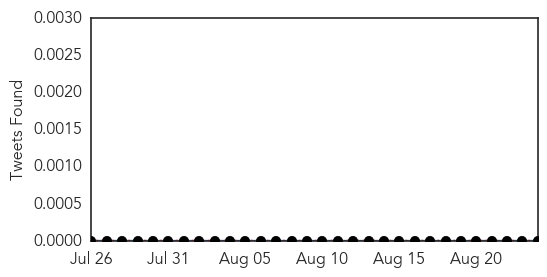

Swine Flu
30-Day Web Trend
0 alerts, 0 warnings

30-Day Twitter Trend
0 alerts, 0 warnings

Article Locations

Article Confidences

Top Articles:
Top Tweets:
-
No tweets found for Aug 24, 2015
Measles
30-Day Web Trend
0 alerts, 0 warnings

30-Day Twitter Trend
0 alerts, 0 warnings

Article Locations

Article Confidences

Top Articles:
- 0.965
- Brisbane Health Authorities Warn Against Measles Outbreak
- 0.951
- Seventh case confirmed at UQ
- 0.921
- Controversial: Doctors in Khyber-Pakhtunkhwa say measles not epidemic
- 0.890
- Seven measles cases in five weeks at Queensland uni
- 0.853
- UN health workers vaccinate millions of children against polio and measles in war-ravaged Yemen
- 0.837
- More measles cases in Brisbane ‘may be likely’ as 7th UQ St. Lucia tests positive
- 0.796
- Time to treat violence in our city as a disease
- 0.579
- ANA issues immunization recommendation
Top Tweets:
-
No tweets found for Aug 24, 2015